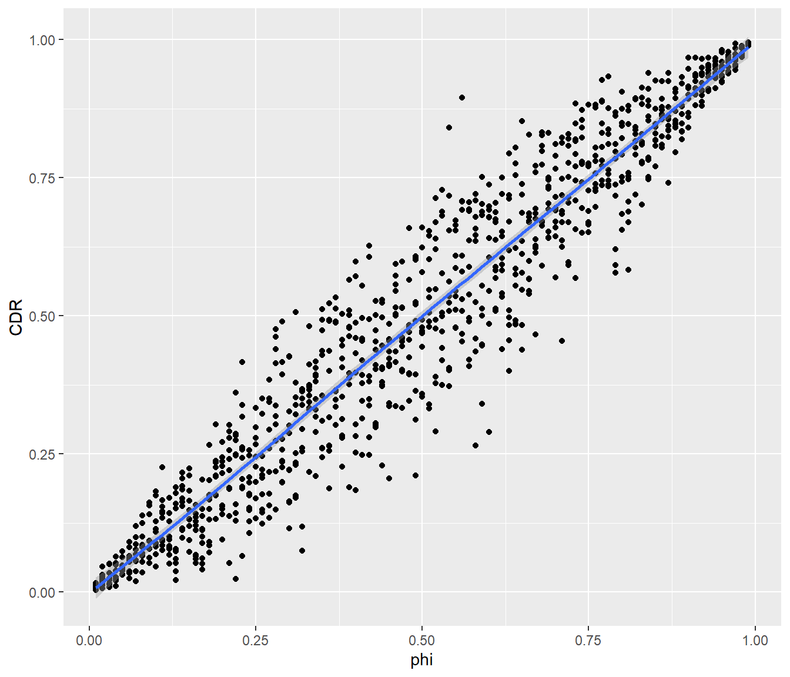
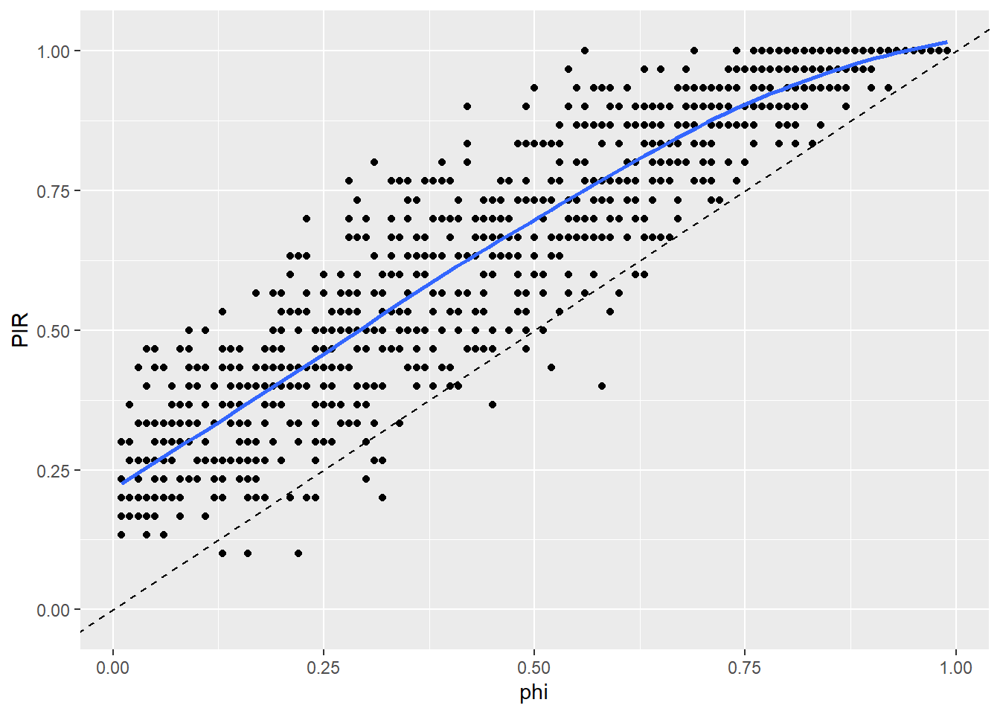
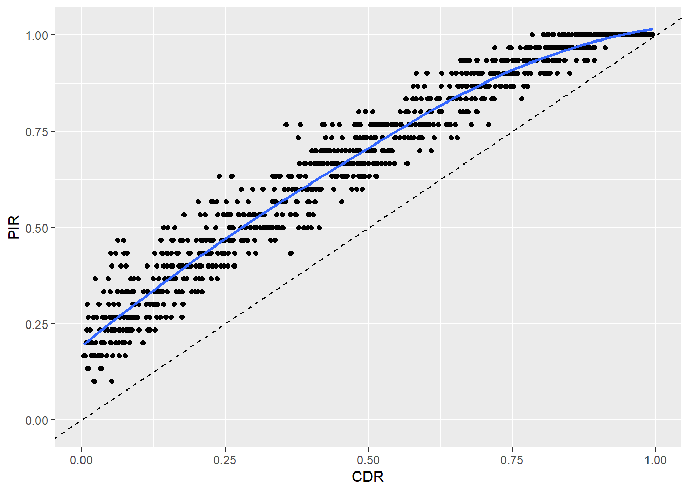
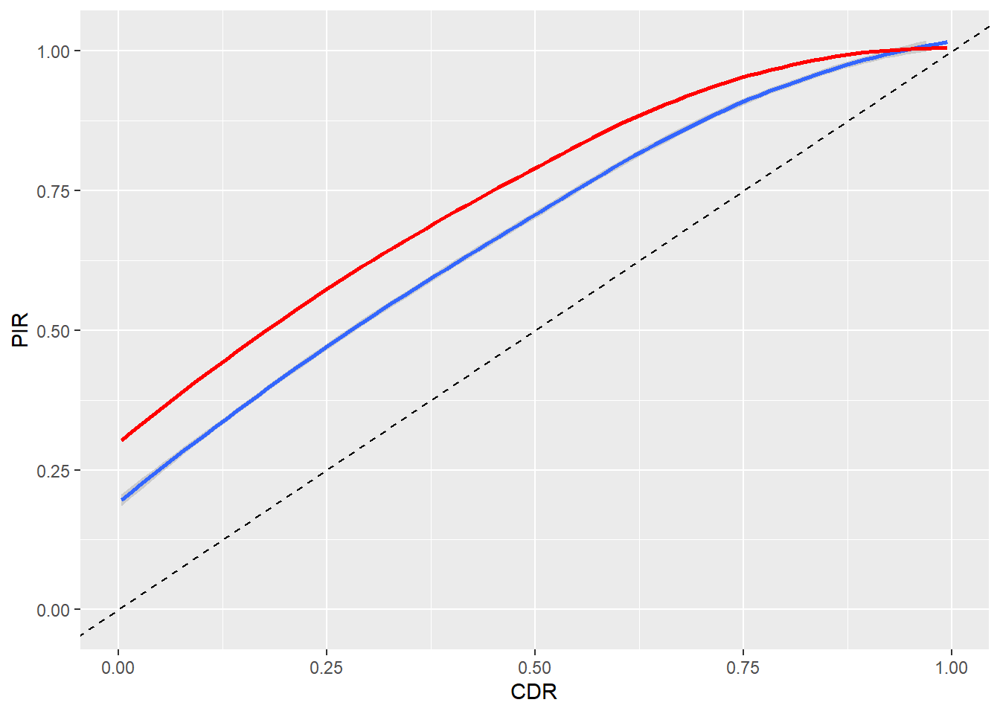
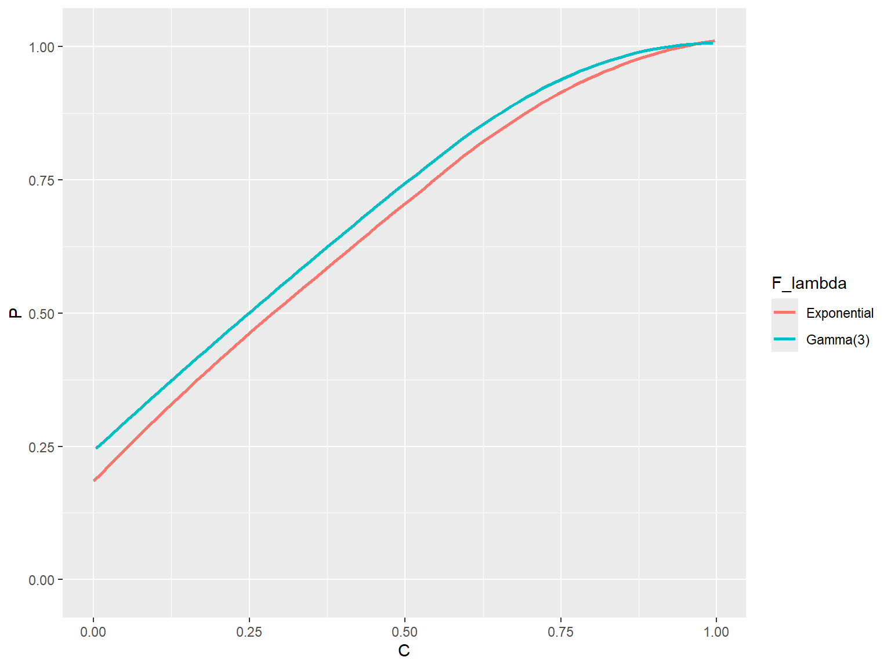

library(ARPobservation)
set.seed(8)
zeta <- 1 / 60
phi <- rep(seq(0.01, 0.99, 0.01), each = 10)
# Now solve for mu and lambda
mu <- phi / zeta
lambda <- (1 - phi) / zeta
iterations <- length(phi) # total number of behavior streams to generateIt is well known that the partial interval recording procedure produces an over-estimate of the prevalence of a behavior. Here I will demonstrate how to use the ARPobservation package to study the extent of this bias. First though, I’ll need to define the terms prevalence and incidence and also take a detour through continuous duration recording.
Prevalence and incidence
First off, what do I mean by prevalence? In an alternating renewal process, prevalence is the long-run proportion of time that the behavior occurs. I’ll call prevalence \(\phi\) (“phi”). So far, I’ve described alternating renewal processes in terms of their average event duration (which I’ll call \(\mu\) or “mu”) and the average interim time (which I’ll call \(\lambda\) or “lambda”). Prevalence is related to these quantities mathematically as follows:
\[ \phi = \frac{\mu}{\mu + \lambda}. \]
So given \(\mu\) and \(\lambda\), we can figure out \(\phi\).
Another characteristic of behavior that can be determined by the average event duration and average interim time is incidence, or the rate of event occurrence per unit of time. I’ll call incidence \(\zeta\) (“zeta”). In an alternating renewal process,
\[ \zeta = \frac{1}{\mu + \lambda}. \]
This makes intuitive sense, because \(\mu + \lambda\) is the average time in between the start of each event, so its inverse should be the average number of times that an event starts per unit of time. (Note that though this is quite intuitive, it’s also very difficult to prove mathematically.) Given \(\mu\) and \(\lambda\), we can figure out \(\zeta\). Conversely, if we know \(\phi\) and \(\zeta\), we can solve for \(\mu = \phi / \zeta\) and \(\lambda = (1 - \phi) / \zeta\).
Continuous duration recording
It can be shown mathematically that, on average, data produced by continuous duration recording (CDR) will be equal to the prevalence of the behavior. In statistical parlance, CDR data produces an unbiased estimate of prevalence. Since this is a mathematical fact, it’s a good idea to check that the software gives the same result (if it doesn’t, there must be something wrong with the code).
In order to simulate behavior streams, the software needs values for the average event duration and average interim time. But I want to think in terms of prevalence and incidence, so I’ll first pick a value for incidence. Say that a new behavioral event starts once per minute on average, so incidence (in events per second) would be \(\zeta = 1 / 60\). I’ll then vary prevalence across the range from zero to one. For each value of prevalence, I’ll generate 10 behavior streams (if you’d like to do more, go ahead!).
Two last elements are needed before I can get to the simulating: I need to decide what distributions to use for event durations and interim times, and I need to decide how long the observation session should last. To keep things simple, for the time being I’ll use exponential distributions. I’ll also suppose that we observe for 10 min = 600 s, so that on average we should observe 10 events per session. Now I can simulate a bunch of behavior streams and apply the CDR procedure to them.
BS <- r_behavior_stream(n = iterations, mu = mu, lambda = lambda, F_event = F_exp(), F_interim = F_exp(), stream_length = 600)
CDR <- continuous_duration_recording(BS)To check that the CDR procedure is unbiased, I’ll plot the CDR data versus the true value of prevalence, and run a smoothing line through the cloud of data-points:
library(ggplot2)
qplot(x = phi, y = CDR, geom = "point") + geom_smooth(method = "loess")Warning: `qplot()` was deprecated in ggplot2 3.4.0.`geom_smooth()` using formula = 'y ~ x'
The blue line is nearly identical to the line y = x, meaning that the average of CDR data is equal to prevalence. Good news–the software appears to be working correctly!
Partial interval recording
Now to partial interval recording (PIR). There are two different ways to think about how PIR data over-estimates prevalence. The conventional statistical approach follows the same logic as above, comparing the average value of PIR data to the true value of prevalence, \(\phi\). Using the same simulated data streams as above, with 15 s intervals and 5 s of rest time after each interval…
PIR <- interval_recording(BS, interval_length = 20, rest_length = 5)
qplot(x = phi, y = PIR, geom = "point", ylim = c(-0.02,1.02)) +
geom_smooth(method = "loess", se = FALSE) +
geom_abline(intercept = 0, slope = 1, linetype = "dashed")`geom_smooth()` using formula = 'y ~ x'
The blue line indicates the average value of PIR data across the simulations for a given value of prevalence. The dashed line indicates y = x, so clearly PIR data over-estimates prevalence.
Previous studies in the Applied Behavior Analysis literature have taken a slightly different approach to thinking about over-estimation. Rather than comparing PIR data to the prevalence parameter \(\phi\), PIR data is instead compared to the sample value of prevalence, which is equivalent to the CDR proportion. Following this logic, I apply the PIR and CDR procedures to the same simulated behavior streams, then plot PIR versus CDR.
obs_data <- reported_observations(BS, data_types = c("C","P"), interval_length = 20, rest_length = 5)
qplot(x = CDR, y = PIR, data = obs_data, geom = "point", ylim = c(-0.02,1.02)) +
geom_smooth(method = "loess", se = FALSE) +
geom_abline(intercept = 0, slope = 1, linetype = "dashed")`geom_smooth()` using formula = 'y ~ x'
The blue fitted line is slightly different than with the other approach, but the general conclusion is the same: PIR data over-estimates prevalence.
But by how much? That’s actually a tricky question to answer, because the extent of the bias depends on a bunch of factors:
- the true prevalence \(\phi\),
- the true incidence \(\zeta\),
- the length of the intervals, and
- the distribution of interim times
F_lambda.
(Curiously enough, the bias doesn’t depend on the distribution of event durations F_mu.)
Interval length
To see that the bias depends on the length of intervals used, I’ll compare 15 s intervals with 5 s rest times versus 25 s intervals with 5 s rest times. For a session of length 600 s, the latter procedure will yield 20 intervals.
PIR_25 <- interval_recording(BS, interval_length = 30, rest_length = 5)
obs_data <- cbind(obs_data, PIR_25)
qplot(x = CDR, y = PIR, data = obs_data, geom = "smooth", method = "loess", ylim = c(-0.02,1.02)) +
geom_smooth(aes(y = PIR_25), method = "loess", se = FALSE, col = "red") +
geom_abline(intercept = 0, slope = 1, linetype = "dashed")`geom_smooth()` using formula = 'y ~ x'
`geom_smooth()` using formula = 'y ~ x'
The red line indicates that the longer interval time leads to a larger degree of over-estimation. (For clarity, I’ve removed the points in the scatter-plot.)
Interim time distribution
It isn’t terribly troubling that the bias of PIR data depends on the interval length, because the observer will generally know (and will hopefully report in any write-up of their experiment) the interval length that was used. Much more troubling is the fact that the bias depends on the distribution of interim times, because this is something that the observer or analyst won’t usually have much information about. To see how this bias works, I’ll compare behavior streams generated using an exponential distribution for the interim times with thos generated using a gamma distribution with shape parameter 3 (this distribution is much less dispersed than the exponential).
BS_exp <- r_behavior_stream(n = iterations, mu = mu, lambda = lambda, F_event = F_exp(), F_interim = F_exp(), stream_length = 600)
obs_exp <- reported_observations(BS_exp, data_types = c("C","P"), interval_length = 20, rest_length = 5)
obs_exp$F_lambda <- "Exponential"
BS_gam <- r_behavior_stream(n = iterations, mu = mu, lambda = lambda, F_event = F_exp(), F_interim = F_gam(shape = 3), stream_length = 600)
obs_gam <- reported_observations(BS_gam, data_types = c("C","P"), interval_length = 20, rest_length = 5)
obs_gam$F_lambda <- "Gamma(3)"
obs_data <- rbind(obs_exp, obs_gam)
qplot(x = C, y = P, color = F_lambda,
data = obs_data, geom = "smooth", method = "loess", se = FALSE, ylim = c(-0.02, 1.02))`geom_smooth()` using formula = 'y ~ x'
The gamma(3) interim time distribution leads to a slightly larger positive bias.